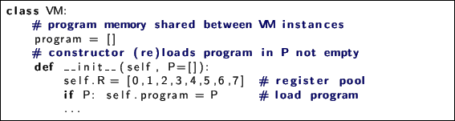

Next: Data Stack Up: Python-binded Virtual Machine Previous: Wrap in class Contents
Widely used methods to transfer data between program parts :
[language=Python]py03.py
Commands operates with registers need more complex encoding in greenprogram memory: operand, and 1+ numbers of registers/data:
[language=Python]py04.py

blueRegisters as fast and native for hardware CPU, as blueextra slow and
ineffective for software interpretation: every data operation require:
So we can use registers in interpreter only if we are going to play with
compilation or profiling for some real hardware or simulated CPU machine code,
but never use it in normal.
Memory-to-memory method widely used in compilers as program greenintermediate
representation [2], and very close to SSA form ![[*]](crossref.png) . m2m is also
the best for parallel computing2.3, multimedia processing2.4, asynchronous data transfer between memory locations and
RAM/device input/output2.5: you send required operation and memory locations to VM using one
command and continue your execution, while parallel processes started by VM will
do all work in background.
. m2m is also
the best for parallel computing2.3, multimedia processing2.4, asynchronous data transfer between memory locations and
RAM/device input/output2.5: you send required operation and memory locations to VM using one
command and continue your execution, while parallel processes started by VM will
do all work in background.
Not so known http://www.vitanuova.com/inferno/papers/dis.htmlDIS virtual machine for http://www.vitanuova.com/inferno/OS Inferno 2.6 also uses m2m architecture.